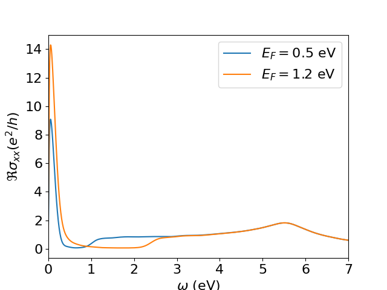

5. Post-processing
As discussed previously, KITEx typically calculates the Chebyshev moments of a user-specified spectral calculation and stores them in the same HDF file that was generated by the configuration script. These moments are used by the post-processing tool named KITE-tools to reconstruct the desired physical quantities, such as the density of states or the optical conductivity. Some special target functions are computed 'on the fly', such as the single-shot DC conductivity, and thus require no post-processing.
In a basic setup, the Python configuration script specifies the post-processing parameters (e.g., number of energy points), which are exported to the HDF file with other settings. Here, the HDF file containing the Chebyshev moments computed by KITEx works as an input to KITE-tools, which retrieves the post-processing parameters and the Chebyshev moments from the HDF file. This data is used to calculate the desired quantities and export them to data files. If a parameter is not specified, a default value is applied.
However, many of these quantities depend on a set of physical parameters (such as temperature, chemical potential, etc.) that are not necessary for the calculation of Chebyshev moments. Therefore, the user can modify them to quickly recalculate quantities with KITE-tools, without needing to run KITEx again. For example, if the user wants to obtain the optical conductivity as a function of the frequency for several values of chemical potential/temperature, the Chebyshev moments (computed once by KITEx) can be used by KITE-tools to quickly obtain the optical conductivity curves for the different parameter choices.
Using the post-processing¶
For this purpose, the user has the flexibility to override the parameters from the Python script by specifying them
in the command line interface. Let us consider the example dos_optcond_gaussian_disorder.py: with the following setting:
./build/KITE-tools optcond_gaussian_disorder-output.h5 --CondOpt -F 1.2 -O 0 10 1000 -N optcond1.2.dat
KITE-tools will calculate the optical conductivity with a Fermi energy specified by the option -F 1.2
(in units specified in the configuration file). The option -O sets the frequency interval between 0and 10
(in the same units) and the total number of frequency points (1000). These options will be used to recalculate
the optical conductivity even if the original configuration file presents different values.
The option -N defines the name of the output file.
We can modify the Fermi energy and produce a different optical conductivities without recalculating the Chebyshev moments:
./build/KITE-tools optcond_gaussian_disorder-output.h5 --CondOpt -F 0.5 -O 0 10 1000 -N optcond0.5.dat

The same strategy can be used to calculate the optical conductivity for different temperatures.
Info
For a more detailed list of possible commands/options for KITE-tools, we strongly recommend you look at the API. This includes some less obvious flags worth knowing about: -X (exclusive — compute only that quantity, skip the rest), -C num_d num_g for --CondOpt (recompute using a truncated number of moment blocks, useful for convergence testing), and -R -1 for --CondOpt2, which switches the second-order optical conductivity calculation to the degenerate \(\omega_2=-\omega_1\) case — i.e. the DC photocurrent/shift-current response — instead of the general two-frequency case.
Other cases: bespoke post-processing¶
Some functionalities do not require post-processing or use bespoke post-processing tools that are not included in KITE-tools.
For example, the single-shot longitudinal conductivity functionality singleshot_conductivity_dc does not
store Chebyshev moments in the HDF file, rather it requests KITEx to directly calculate the DC conductivity for specified values of the Fermi energy.
To extract the calculated DC conductivity, we can use a Python script located in the tools directory: process_single_shot.py, using
In the same tools directory, users can find another script which plots the output of a spectral function (ARPES) calculation.
Processing the output of singleshot_conductivity_dc
singleshot_conductivity_dc() works differently from the other target functions in that it just requires a single run with KITEx. As such, the prost-processing with KITE-tools is not required, and instead, the requested single-shot values of the DC conductivity can be retrieved directly from the HDF file once KITEx has run. You can extract the results from the HDF file as explained in the tutorial, with "output.h5" the name of the HDF file:
kite/tools/-directory.